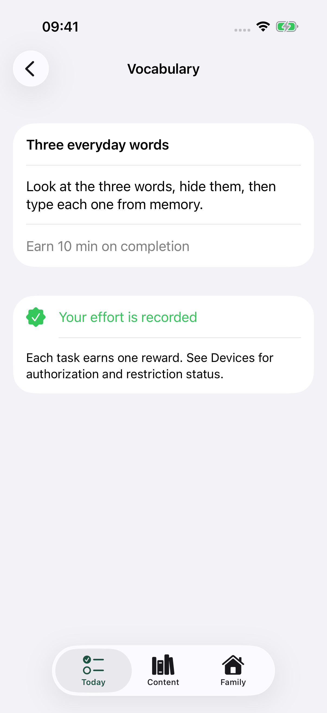

우리 집 자료로 과제 만들기
단어, 학습지, 글, 연습 내용을 촬영하면 기기 안에서 글자를 인식합니다. 사용 전에 인식 결과를 확인하고 수정한 뒤 조건을 추가하세요. 인식된 글자는 수정이 필요할 수 있습니다.
매일의 약속을 명확하게
Unlock Control은 학습, 운동, 악기 연습을 아이가 이해하기 쉬운 하루 과제로 만들 수 있도록 도와줍니다. 템플릿으로 시작하거나 집에 있는 자료를 사용해 완료 조건과 보상을 정하세요.
App Store 심사를 기다리고 있습니다. 출시일은 아직 정해지지 않았습니다.

직접 입력, 붙여넣기, TXT·CSV 파일 가져오기 또는 사진을 사용하세요.
글자를 확인하고 답이나 완료 조건, 보상을 정하세요.
아이가 과제를 마치면 결과를 확인하세요. 판단이 필요한 과제는 부모가 확인합니다.
작성 중인 내용은 초안으로 저장하고, 이전 과제는 다시 사용할 수 있습니다.
단어, 학습지, 글, 연습 내용을 촬영하면 기기 안에서 글자를 인식합니다. 사용 전에 인식 결과를 확인하고 수정한 뒤 조건을 추가하세요. 인식된 글자는 수정이 필요할 수 있습니다.
운동 목표를 정하세요. 카메라를 통한 횟수 계산 보조는 스쿼트, 팔굽혀펴기, 윗몸일으키기 세 가지에만 지원됩니다. 횟수는 참고용이며 확인이 필요할 수 있습니다. 그 밖의 운동은 부모가 완료를 확인합니다.
악기, 곡, 연습 구간, 시간, 반복 횟수와 선택 사항인 목표 템포를 정하세요. 타이머를 시작한 뒤 연습 화면을 전면에 열어 둔 동안에만 시간이 기록됩니다. 연습 화면을 나가거나 기기를 잠그거나 앱을 백그라운드로 전환하면 일시 정지됩니다. 완료 여부는 부모가 확인하며, 연주 소리를 듣고 점수를 매기지 않습니다.
단어와 지원되는 기초 수학 문제는 설정한 답에 따라 확인합니다. 판단이 필요한 다른 과제는 승인하거나 의견과 함께 돌려보낼 수 있습니다. 기기에 저장된 6자리 부모용 PIN으로 관리 작업을 보호하고, 하루 보상 한도와 휴식 시간을 정하세요.
단어 만들기, 자료 가져오기, 정답 설정, 아이의 답변까지 Words의 전체 과정을 무료로 이용할 수 있습니다.
일회성 앱 내 구매 한 번으로 수학, 낭독, 운동, 악기 연습, 맞춤 과제를 이용할 수 있습니다. 월간·연간 구독은 없습니다. 해당 지역의 가격은 구매 화면에 표시됩니다.
지원되는 자녀 기기에서 Apple 가족 설정과 스크린 타임 권한 승인을 마치면 제한할 앱, 카테고리, 웹사이트를 선택할 수 있습니다. 과제 보상에 따라 여가 시간을 요청할 수 있습니다. 기기 암호를 대체하거나 기기 전체를 잠그는 기능은 아닙니다.
과제 내용, 문자 인식, 운동 카메라 처리는 기기 안에서 이루어집니다. 앱 계정 가입은 필요하지 않으며, 원격 과제 전달이나 클라우드 동기화는 제공하지 않습니다.
우리 집 단어부터, 가족에게 맞는 일상을 만들어 보세요.
App Store 출시 예정